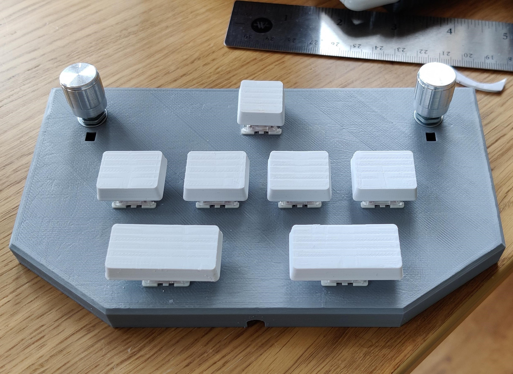

Pocket Voltexes
Sound Voltex is an arcade game by Konami in their Bemani series. Officially, you can't play it at home, but there are numerous open-source clones of the game (for example, Unnamed Sound Voltex Clone) with a thriving community around them. One of the standout reasons people enjoy modern music games is they have unique control methods. Sound Voltex uses 6 buttons and two analog knobs to control the game - two of the buttons and the knopbs apply effects to the music, the idea being that you're simulating being a DJ. Unfortunately, as a result, these games are kind of hard to play on a keyboard or controller - or at least, the experience isn't the same. As such, there's a community of people who make custom controllers for Voltex, Chunthim, Beatmania etc. However the barrier of entry is pretty high (you need a 3d printer and soldering skills, and need to be comfortable with troubleshooting circuitry) so to open this hobby up to more people, I've been taking on commissioned work to produce Pocket Voltex controllers based on SpeedyPotato's Design. The Pocket Voltex is small, about half the size of a regular keyboard, but has all the functionality of the full-size controller. It's compatible with numerous clones, as well as spice tools, and even works on Sequence Storm, a steam game designed around a similar control concept as Voltex. They also have a keyboard mode where the knobs control your mouse, if you really want to hamper yourself in an FPS. For these works, I'm charging around £100, dependent on postage costs to where you are. If you're interested in commissioning a controller, contact me on discord: Athene#6460.Testimonials
- "Well I've been playing with it for like a month now. I had no problems setting it up, it's still in great shape so build quality is amazing. As we both know there was a minor mishap during transit but that was fixed very easily. Overall I'm very very satisfied with the con itself."
Media
Here's some photos of the finished controller, and youtube links demonstrating the function as well as the LEDs.